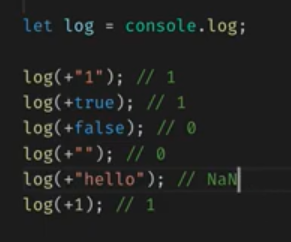
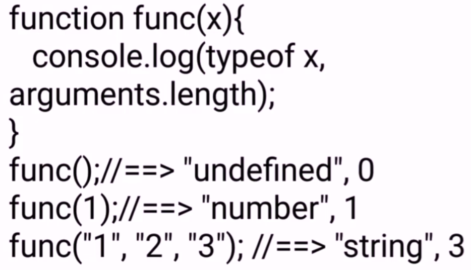

Unary operator is operators that act upon a single operand to produce a new value. The unary operators are as follows. Operator.
Basically Unary Operator is the operator who is taking one single operand and it will try to convert into numerical values

How can you get total no of arguments passed to a function ?
Using arguments.length property, We can get the total number of arguments passed to a function
